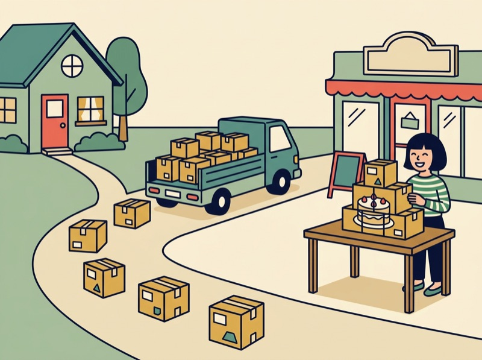

📱 スマホで開く
教室の画面を見ながら、自分のスマートフォンで、このページを開けます。スマートフォンのカメラで、このQRコードを読み取ってください。QRコードを押すと、大きく表示されます。
スマートフォンでも、ブラウザの翻訳が使えます。
この回のゴール
- プロトコルとは何か（通信の決まり）を、例を使って説明できる
- IPアドレス・ドメイン名・DNSの関係を、「番号」「名前」「名前から番号を調べる仕組み」で説明できる
- パケット（データを分けた単位）とISP（インターネットに接続できるサービスを提供する事業者）の意味を言える
- AIとIoTの違いを、例を使って説明できる。AIの答えは、人が確かめる必要があることを言える
- 過去問（令和7年度）を、問い方の型を使って解く
授業の流れ
2コマ連続（90分 + 90分 = 計180分）。休憩10分は授業時間に含めません。
前回の復習テスト → ホームページが開くまでのストーリー → 通信の約束（プロトコル）
前回の復習テスト（約10分：テスト約5分＋解説の確認約5分）
前回（第5回）の内容を、1週間たって、どれだけ覚えているかを確かめる5問（約5分）。点数を競うものではない。覚えていることと、忘れていることを、自分で知るためのテスト。送信すると、点数と、正解・解説が表示される。そのあと、間違えた問題の解説を読む。分からないところは、隣の人か先生に聞く。
今日のストーリー：お客さんがカフェのホームページを開く（約10分）
駅前のカフェを開いたAさん（架空の話）は、お店のホームページと、いろいろな道具を使い始めた。インターネットの中で何が起きているか、順番に読む。
- 1. 家からお店のホームページを開くお客さんが、自分のスマートフォンで、お店の名前を入力する。遠くのお店のホームページが、数秒で開く。どうして届くのか。

2. データは、小さく分けて運ばれる大きなデータは、小さな単位に分けて送られ、届いた先で組み立て直される。- 3. 売上のデータから、明日を予測したい過去の売上のデータを学習して、明日のお客さんの数を予測する道具がある。これがAI。
- 4. 店の機械が、インターネットにつながるコーヒーマシンや冷蔵庫の状態を、スマートフォンで見たい。モノがインターネットにつながる。これがIoT。
1はプロトコル・IPアドレス・DNS、2はパケット、3はAI、4はIoTの話。順番に学ぶ。
ペアで話す（約5分）：自分のスマートフォンで、「知らないお店のホームページ」を開くとき、どうやってそのお店を見つけるか（お店の名前で検索する、地図から開く、友だちにもらったリンクを開く、など）。見つけたあとに、何を入力したり押したりしているか。日本語で話す。
今日の地図（約5分）
お客さんのスマートフォンが、ホームページを開くまで
プロトコルとTCP/IP：通信の約束（約10分、教科書 p.329-345）
国によって、使う言葉や、あいさつのしかたが違う。決まりがそろっていないと、話が通じない。コンピュータも同じ。プロトコル（通信プロトコル）は、ネットワークを介してコンピュータ同士がデータをやり取りするために定められた、データ形式や送受信の手順などの国際標準の規則のこと（総務省の用語集。確認日：2026-11-03）。メーカーや機種が違っても、同じプロトコルに従っていれば、お互いに通信できる。
TCP/IPは、インターネットなどで標準的に使われている、通信の約束。IPAのシラバスは、これを4つの層に分けて考える（TCP/IP階層モデル）と書いている。層の名前は、下の図のとおり。
TCP/IPの4つの層（IPAシラバスの用語）
Webやメールなど、使い道ごとに、別々のプロトコルがある。試験のシラバスの用語例には、HTTP、HTTPS（HTTP over TLS）、SMTP、POP、IMAP、FTP、NTP、DHCPなどが出てくる。今日は、過去問（問60）で、いくつかの役割を確かめる。
IPアドレス → ドメイン名・URL・DNS（テクノロジ系：ネットワーク 教科書 p.329-345）
① IPアドレス：機器の住所（約15分）
インターネットでは、通信相手を「IPアドレス」という番号で指定・識別している。IPアドレスは、インターネットに接続しているすべての機器に割り当てられ、インターネット上では原則として、同じ番号が別の機器に重ねて割り当てられることはない（JPRSの解説。確認日：2026-11-03）。
荷物を送るとき、住所がないと届かない。データを送るときも、送り先のIPアドレスを指定して送る。受け取った側は、送ってきた相手のIPアドレスを調べて、誰から来たデータかを知る。
プライベートIPアドレスとグローバルIPアドレス
試験のシラバスの用語例には、IPアドレスの種類として「IPv6」「IPv4」「グローバル」「プライベート」が出てくる。今日は、グローバルとプライベートの違いまで。
② ドメイン名・URL・DNS：名前から住所を調べる（約20分）
IPアドレスは、数字の並びで、人には覚えにくい。そこで、覚えやすい名前を使う。その名前がドメイン名。総務省の用語集は、IPアドレスが人間には判別が困難なので、「soumu.go.jp」のようにドメイン名で書けるようになっている、と説明している（確認日：2026-11-03）。
そして、DNS（Domain Name System）は、人が覚えにくいIPアドレスの代わりに、覚えやすい「名前」をインターネットで使えるようにするために開発された仕組み（JPRSの解説。確認日：2026-11-03）。名前と番号を、結びつける。
名前を入力してから、ホームページが開くまで
URLは、Webページの場所を示す文字列。URLの中には、ふつう、ドメイン名が入っている。下の図は、総務省のサイトのURLの例。
URLの中のプロトコルとドメイン名
手を動かす：自分のスマートフォンで、ドメイン名を見つける（約10分）
- ブラウザで、このページを開く。アドレスバーのURLを見る。「https://」のあと、最初の「/」までが、ドメイン名。これは、何と書いてあるか
- ブラウザで、総務省のサイト（https://www.soumu.go.jp/）を開く。ドメイン名は、何か。このページのドメイン名と、同じか、違うか
- 隣の人と、見つけたドメイン名を比べる。ドメイン名は、誰が用意したページかを知る、手がかりの1つになる（ドメイン名だけで、安全かどうかが決まるわけではない。第2〜4回で学んだ、標的型攻撃やなりすましの話を、思い出す）
ペアで確かめる（約5分）：「IPアドレス」「ドメイン名」「DNS」を、カフェのAさんに、やさしい日本語で説明する。1人が説明して、もう1人が、分かりにくいところを聞く。説明できたら、反対にする。
パケット・ISP → AIの活用 → IoT・組込みシステム（教科書 p.329-345、p.094-097、p.106-110）
① パケットとISP：データの運ばれ方と、回線を用意する会社（約15分）
パケットは、ネットワークを通して送信されるデータを分割するときに使われる単位のこと（総務省の用語集。確認日：2026-11-03）。ファイルを送るとき、データをいくつかのパケットに分けて、それぞれに、IPアドレスなどの相手を識別する情報と、組み立て直すための順番の情報をつける。
分けると、途中でエラーが起きても、データ全体ではなく、パケット単位で送り直すだけで済む。だから、データの転送の効率が良くなる（総務省の用語集の説明）。ストーリーの2の絵の、小さな箱が、パケット。
-
ISP（インターネットサービスプロバイダ）
インターネットに接続できるサービスを提供する事業者のこと。電子メールを送ったり、ホームページを見たりするには、通常、ISPとの契約が必要（総務省の用語集。確認日：2026-11-03）。
-
モバイル通信と5G
スマートフォンのインターネット通信にも、パケット通信が使われる。総務省の用語集は、5G（第5世代移動通信システム）を、「多数同時接続」「超低遅延」といった特徴を持つ、あらゆるモノ・人などがつながるIoT時代の新しい通信、と説明している（確認日：2026-11-03）。
試験のシラバスの「通信サービス」の用語例には、ISPのほか、MVNO、基地局、テザリング、SIMカード、eSIMなども出てくる。パケット通信は、使った量で課金される方式と、定額の方式がある、という使い分けの考え方も、シラバスにある。細かい用語は、教科書 p.329-345 で確かめる。
② AIの活用（約15分、教科書 p.094-097）
AIは、Artificial Intelligenceの略で、人工知能のこと（総務省 情報通信白書の用語解説。確認日：2026-11-03）。ストーリーの3は、AIの使い方の例。IPAのシラバスは、AIの活用例として、次のようなものを挙げている。
-
データを学習して、予測する
教師あり学習による予測。例：売上予測、り患予測、成約予測、離反予測。ストーリーの3は、これ。
-
似たものを、グループに分ける
教師なし学習によるグルーピング。例：顧客セグメンテーション、店舗クラスタリング。
-
文章や画像を、つくる・直す
生成AIの活用。例：文章の添削・要約、アイディアの提案、プログラミング、画像生成など。
画像から動物を見分けるようなAIの技術には、ディープラーニングがある（IPAシラバスのAI技術の用語例）。今日は、過去問（問86）で確かめる。
AIの答えは、人が確かめる（約5分）
IPAのシラバスは、AIを使うときの注意として、AIの出力に、誤った情報、偏った情報、古い情報などが含まれる可能性があること、そして、AIの出力に対する人間の関与の必要性を挙げている。
【ペアで考える】次の文は、AIに「DNSとは何か」と聞いたときの答えの例（この教材のために作った文。実際のAIの答えではない）。
「DNSは、IPアドレスを暗号化して、通信を安全にする仕組みです。」
この答えは、合っているか。どの資料を見れば、確かめられるか。ペアで話す（約3分）。
答えの例を見る
合っていない。DNSは、ドメイン名とIPアドレスを結びつける仕組み。「暗号化」の話ではない。確かめるには、JPRSの解説、総務省の用語集、教科書のように、出どころがはっきりした資料を見る。AIの答えは、読みやすくて自信のある書き方でも、間違っていることがある。AIは下書きに使い、内容が合っているかは、人が確かめる。
③ IoTシステム・組込みシステム（約15分、教科書 p.106-110）
IoTは、Internet of Thingsの略で、「モノのインターネット」と呼ばれる。自動車、家電、ロボット、施設などあらゆるモノがインターネットにつながり、情報のやり取りをすることで、モノのデータ化やそれに基づく自動化などが進展し、新たな付加価値を生み出す（総務省 情報通信白書の用語解説。確認日：2026-11-03）。ストーリーの4は、店の機械のIoT。
AIとIoTの違い
AI
人工知能。データから学習して、予測や判断などを行う使い方が多い。
IoT
モノがインターネットにつながり、情報をやり取りする仕組み。
組込みシステムは、家電や機械などの中に組み込まれて、その機器を動かす、コンピュータのシステム。IPAのシラバスは、身近な例として、携帯電話や産業用ロボットなどを挙げている（用語例）。
試験のシラバスのIoTの用語例には、スマートスピーカー、コネクテッドカー、スマートシティ、スマート農業、HEMSなどがある。IoTの通信方式には、通信距離・速度・消費電力などによって、使い分けがある（BLE、LPWAなどが、シラバスの用語例）。今日は、過去問（問56）でBLEを確かめる。
ペアで話す（約3分）：自分の家や学校にある、IoTだと思うものを1つ挙げる。それは、何と、何がつながっているか。
過去問演習 → 用語を説明し合う → 確認テスト（1回目）
過去問演習（約15分）：今日の範囲の令和7年度の公開問題を、問い方の型を使って解く。4問ある。自分で選んでから、答えと解説を見る。
【例題①】問58 DNS の説明として，適切なものはどれか。
出典：令和7年度 ITパスポート試験 公開問題 問58（テクノロジ系。問題文・選択肢は原文のまま）
自分で選んだあとに、答えと解説を見る
正解：ウ（型：説明文から、用語の役割を選ぶ）。DNSは、名前（ドメイン名など）とIPアドレスを結びつける仕組み。選択肢のウが、そのまま当たる。ア・イ・エは、別のものの説明。アは「IPアドレスを自動的に割り当てる」話、イは「通信を暗号化する」話（第4回の暗号化に近い話）、エは名前とMACアドレスを結びつける話で、結びつける相手が違う。「何と何を結びつけるか」の部分を、1つずつ確かめて選ぶ。第5回の問57の選択肢ウも、DNSの説明だった。
【例題②】問60 TCP/IP ネットワークで用いられるプロトコルである FTP の役割として，適切なものはどれか。
出典：令和7年度 ITパスポート試験 公開問題 問60（テクノロジ系。問題文・選択肢は原文のまま）
自分で選んだあとに、答えと解説を見る
正解：エ（型：プロトコルの名前と、役割を結びつける）。FTPは、ファイルを送る（転送する）ためのプロトコル。プロトコルは、使い道ごとに別々にある、というのが、この問題の考え方。ア・イ・ウは、ほかのプロトコルの役割。それぞれ、NTP（時刻）、SMTP（メールを送る）、DHCP（番号の自動割り当て）の名前が、シラバスの用語例にある。今日は、FTPだけ分かればよい。選択肢の「何をするか」の部分から、役割を選ぶ。
【例題③】問86 動物が写っている大量の画像から犬や猫などの特徴を自動的に抽出して，動物の種類を識別できるようにする AI の技術はどれか。
出典：令和7年度 ITパスポート試験 公開問題 問86（テクノロジ系。問題文・選択肢は原文のまま）
自分で選んだあとに、答えと解説を見る
正解：エ（型：説明文から、用語を選ぶ）。大量のデータから、特徴を自動的に取り出して、見分けられるようにするAIの技術は、ディープラーニング。IPAのシラバスの、AIの技術の用語例にある。ア・イ・ウは、学習・教育の方法の名前で、問題文の「特徴を自動的に抽出するAIの技術」ではない。「AIの技術はどれか」と聞かれているので、AIの話ではない選択肢を、先に外せる。
【例題④】問56 Bluetooth に追加された仕様の一つであり，省電力性に優れているので，IoT システムを長期間運用でき，送受信デバイス間の距離を知ることにも使われているものはどれか。
出典：令和7年度 ITパスポート試験 公開問題 問56（テクノロジ系。問題文・選択肢は原文のまま）
自分で選んだあとに、答えと解説を見る
正解：ア（型：特徴の説明から、用語を選ぶ）。BLEは、Bluetooth Low Energyの略で、シラバスのIoTネットワークの用語例にある。問題文の「Bluetoothに追加された仕様」「省電力性に優れている」「IoTシステムを長期間運用できる」の言葉が、BLEに当たる。IoTの機器には、電池で長く動かしたいものもあるので、省電力の通信方式が選ばれる、と考えると覚えやすい（シラバスは、通信距離・速度・消費電力などによる使い分けと書いている）。IrDA・NFC・PLCは、今日の用語カードには入れていない。この問題は、「Bluetoothに追加された仕様」という言葉から、Bluetoothの名前が入ったBLEを選ぶ、というヒントの使い方もできる。
用語を、ペアで説明し合う（約10分）：下の「用語カード」の11語から、3つずつ選び、1人が、やさしい日本語で意味を説明する。もう1人は、どの用語かを当てる。
確認テスト（1回目）（約5分）
今日の内容の5問。点数を競うものではない。今、どこまで分かっているかを、自分で知るためのテスト。分からない問題は、思い出せる範囲で答える。送信すると、点数と、正解・解説が表示される。
振り返り → 用語カードの提出・次回予告
- 振り返り（約3分）：1回目の結果の画面で、点数を覚えて、間違えた問題の解説を読む。分からないところは、隣の人に聞く、または、このページの用語カード・練習クイズで確かめる
- 確認テスト（2回目）は任意：時間がある人、確かめたい人は、下の「任意の取り組み」から受ける
- 用語カード：今回覚えた用語にチェックを入れて、フォームで提出する（約3分）
- 質問と、次回までの課題の確認（約1分）。読むだけの「就活ワンポイント」もある。自分の点数の推移は、「任意の取り組み」の「自分の成績を見る」から、いつでも見られる
- 次回（第7回）：コンピュータの中身を開ける——CPU・記録媒体と、企業のお金の管理（テクノロジ系 p.244-255、ストラテジ系 p.033-040）
用語カード（今日の用語）
用語カードは、今日の授業で出る用語と、その意味のリスト。授業の最後に、フォームで今回覚えた用語にチェックを入れて提出する。用語は日本語のまま覚える。試験は日本語で行われる。
| 用語 | 意味 |
|---|---|
| プロトコル | ネットワークを介してコンピュータ同士がデータをやり取りするために定められた、データ形式や送受信の手順などの国際標準の規則。通信プロトコルとも呼ばれる |
| TCP/IP | インターネットなどで標準的に使われている、通信の約束。4つの層に分けて考える（TCP/IP階層モデル） |
| IPアドレス | インターネットに接続している機器に割り当てられる番号。通信相手を指定・識別するのに使う。グローバル（世界で固有）とプライベート（組織の中で自由に使える）がある |
| ドメイン名 | IPアドレスの代わりに使う、人が覚えやすい名前（例：soumu.go.jp） |
| DNS | ドメイン名とIPアドレスを結びつける仕組み。名前から、番号を調べられる |
| URL | Webページの場所を示す文字列。ふつう、中にドメイン名が入っている |
| パケット | ネットワークで送るデータを分割するときの単位。分けて送ると、エラーのときに、そのパケットだけ送り直せる |
| ISP | インターネットに接続できるサービスを提供する事業者（インターネットサービスプロバイダ） |
| AI | 人工知能。データから学習して、予測や判断などを行う使い方が多い。出力は、人が確かめる必要がある |
| IoT | 「モノのインターネット」。家電や自動車などのモノがインターネットにつながり、情報をやり取りする仕組み |
| 組込みシステム | 家電や機械などの中に組み込まれて、その機器を動かす、コンピュータのシステム（例：携帯電話、産業用ロボット） |
練習クイズ（サイト内・記録なし）
確認テストの内容を、自分のペースで練習するためのクイズ（確認テストと同じ内容）。回答はこのページの中で判定されるだけで、どこにも送信・保存されず、成績にも含まれない。何度でも試せる。
Q1ネットワークを介して，コンピュータどうしがデータをやり取りするために定められた，データ形式や送受信の手順などの決まりはどれか。
プロトコルは、ネットワークを介してコンピュータ同士がデータをやり取りするために定められた、データ形式や送受信の手順などの規則（総務省）。アは機器ごとの番号、ウはネットワークにつけた名前、エはデータを分けた単位。
Q2インターネットに接続している機器を見分けるために，機器ごとに割り当てられる番号はどれか。
IPアドレスは、インターネットに接続している機器に割り当てられる番号で、通信相手を指定・識別するのに使う（JPRS）。アは人が覚えやすい名前、イは通信の決まり、エは無線LANのネットワークの名前。
Q3「example.jp」のようなドメイン名でWebサイトを開くときに，ドメイン名に対応するIPアドレスを調べて答える仕組みはどれか。
DNSは、人が覚えにくいIPアドレスの代わりに、覚えやすい名前（ドメイン名）をインターネットで使えるようにする仕組み（JPRS）。ドメイン名とIPアドレスを対応づける。アはインターネットに接続できるサービスを提供する事業者、イはデータを分けた単位、ウはWebページの場所を示す文字列。
Q4IoTの説明として，最も適切なものはどれか。
IoT（Internet of Things、モノのインターネット）は、自動車・家電・ロボット・施設などあらゆるモノがインターネットにつながり、情報のやり取りをすることで、モノのデータ化やそれに基づく自動化などが進展し、新たな付加価値を生み出すこと（総務省 情報通信白書の用語解説）。イはAI、ウはDNS、エはWANの説明。
Q5カフェで，過去の売上データを学習して，明日の来店客数を予測するのに使われる技術はどれか。
AI（人工知能）は、データを学習して、予測や判断などを行う技術。売上予測は、AIの活用例（IPAシラバス：教師あり学習による予測（売上予測など））。IoTは、モノがインターネットにつながる仕組みで、データを集めるのには使われるが、予測そのものを行う技術ではない。DNSとISPは、インターネットにつながる仕組みと事業者。
任意の取り組み
必須ではありません。時間があるとき、確かめたいときに使います。
確認テスト（2回目）
1回目と同じ5問です（問題の順番は違います）。受けたら、結果の画面の点数を、1回目の点数と自分で比べます。1回目の点数を、覚えておきます。
自分の成績を見る
診断テスト・復習テスト・確認テストの点数の推移と、次に復習するとよい用語を見られます。学校のGoogleアカウントでログインすると、自分の分だけが表示されます。
就活ワンポイント（任意）
授業時間には含めない、読むだけのコラム。成績にも含まれない。今日の言葉を、面接で使う練習。
面接で「ITに詳しくない人に、説明してください」と言われたら
面接官から、こう聞かれることがある。専門用語を使わずに、短く説明する練習になる。答えは、3つの順番で話すと、分かりやすくなる（一つの考え方）。下の吹き出しが、順に現れる。
- 例文は一例。自分が実際に学んだこと、したことを話す。していないことは、言わない。
- 用語を、日本語のまま使えて、しかも「住所」「電話帳」のような例えで言い換えられると、ITに詳しくない人にも伝わる。
- 「家のネットワークを図にした」「AIの答えを、資料で確かめた」のように、自分がしたことを一言入れると、話に説得力が出る。
答え方の順番（結論・理由・まとめ）は、この教材の一つの考え方で、公式のルールではない。IPAは、ITパスポート試験の合格について、「就職活動において、自らの知識を証明し、自己アピールに役立ちます」と紹介している（IPA「合格のメリット」、確認日：2026-11-03。留学生向けに書かれた説明ではない）。
課題・次回までにやること
教科書 p.244-255 を読み、CPUが何をするものか、記録媒体にどんな種類があるか、確認しておく。第7回の授業の最後に、覚えた用語をフォームで提出する。
練習クイズは、全問正解になるまで繰り返す。間違えた用語は、用語カードで確かめる。
今日の範囲の章末確認問題を、自分のペースで解く。授業では、同じ範囲を確認テストで確かめる。
自分がよく開くサイト（学校、ニュース、動画など）のURLを見て、ドメイン名の部分を3つ書き出す。同じ名前の一部（例：「.jp」）が、ほかのサイトにもあるか、見る。
参考リンク
- 用語集（は行）：プロトコル・パケット・5G総務省「国民のためのサイバーセキュリティサイト」
- 用語集（た行）：ドメイン・ドメイン名総務省「国民のためのサイバーセキュリティサイト」
- 用語集（か行）：グローバルIPアドレス総務省「国民のためのサイバーセキュリティサイト」。プライベートIPアドレスとの違いと、ルーターの変換にも触れている
- 用語集（あ行）：インターネットサービスプロバイダ総務省「国民のためのサイバーセキュリティサイト」
- ＪＰＲＳ トピックス＆コラム ＤＮＳのしくみと動作原理（PDF）JPRS。IPアドレスとDNSの説明を確かめた資料
- 用語解説（PDF、平成28年版 情報通信白書）総務省。AIとIoTの説明を確かめた資料（2016年版）
- ITパスポート試験シラバス（PDF、Ver.6.5）IPA。「通信プロトコル」「ネットワーク応用」「IoTシステム・組込みシステム」「AIの利活用」の用語例で、試験での用語の書き方を確かめる
- 【ITパスポート試験】合格のメリットIPA。就活ワンポイントで紹介した記述の出典
- 過去問題 | 試験情報 | IPA公開問題と解答例の一覧。法令に特別の定めがある場合を除き、許諾・使用料は不要（IPA公式）。この授業では、年度と問番号を出典として書く
- 令和7年度 ITパスポート試験 公開問題（PDF）例題の出典
- 令和7年度 ITパスポート試験 公開問題 解答例（PDF）例題の正答の確認